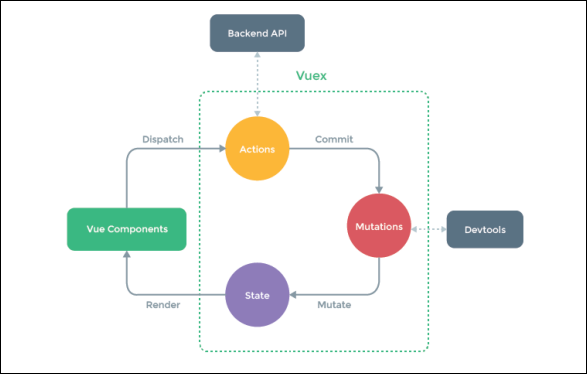

原文连接:https://www.cnblogs.com/rope/p/10736798.html
一、日历组件
new Date()的月份是从0开始的。
下面表达式是：2018年6月1日
new Date(2018, 5, 1);
下面表达式是：2018年5月1日
new Date(2018, 4, 1);
或
new Date(2018, 5-1, 1);
下面表达式是：2018年5月31日（得到上个月的最后一天）
new Date(2018, 5 , 0);
日的参数可以是0，也可以是负数，表示上个月底的那一天。
下面表达式是：2018年7月01日
new Date(2018, 5, 31);
l App.vue父组件：


<template>
<div>
<MonthView :year="year" :month="month"></MonthView>
</div>
</template>
<script>
import MonthView from "./components/MonthView.vue";
export default {
data(){
return {
year : 2018 ,
month : 8 ,
}
},
components : {
MonthView
},
methods : {
}
}
</script>l MonthView.vue子组件
<template>
<div>
月视图{{year}} {{month}}
{{arr}}
</div>
</template>
<script>
export default {
props : ["year" , "month"],
computed : {
arr(){
//计算日历的数组：三要素
//本月1号星期几
var this1DayWeek = new Date(this.year, this.month - 1, 1).getDay();
// 本月有几天
var thisMonthDay = new Date(this.year, this.month, 0).getDate();
// 上月有多少天
var prevMonthDay = new Date(this.year, this.month - 1, 0).getDate();
console.log(benyue1haoxingqiji)
console.log(benyueyoujitian)
console.log(shangyueduoshaotian)
}
}
}
</script>l 显示在页面：
<template>
<div>
<table>
<tr v-for="i in 6">
<td v-for="j in arr.slice((i-1) * 7, i * 7)">
{{j}}
</td>
</tr>
</table>
</div>
</template>
<script>
export default {
props:["year","month"],
computed : {
arr(){
var _arr = []; //存储42天的数组
// 计算日历的数组：三要素
//本月1号星期几，根据星期几得到上个月剩余天数
var this1DayWeek = new Date(this.year, this.month-1, 1).getDay();
//上个月有多少天
var prevMonthDay = new Date(this.year, this.month-1, 0).getDate();
//本月有几天
var thisMonthDay = new Date(this.year, this.month, 0).getDate();
//用本月1号星期几，推断出上月的剩余天数
for(var i = 0; i < this1DayWeek;i++){
_arr.unshift(prevMonthDay - i)
}
//循环本月天数（累加），从数组末尾插入
for(var i = 1; i <= thisMonthDay;i++){
_arr.push(i)
}
//补充下月的天数（满42天为止）
var i = 1;
while(_arr.length != 42){
_arr.push(i++);
}
return _arr;
}
}
}
</script>l 显示农历，安装插件：
npm install solarlunar --save<template>
<div>
<h1>月视图 {{year}}年{{month}}月</h1>
<table>
<tr>
<th>日</th>
<th>一</th>
<th>二</th>
<th>三</th>
<th>四</th>
<th>五</th>
<th>六</th>
</tr>
<tr v-for="i in 6">
<td v-for="j in arr.slice((i-1) * 7, i * 7)">
<p class="p1">{{j.d}}</p>
<p class="p2">{{j.n}}</p>
</td>
</tr>
</table>
</div>
</template>
<script>
import solarLunar from 'solarLunar';
export default {
props:["year","month"],
computed : {
arr(){
var _arr = []; //存储42天的数组
// 计算日历的数组：三要素
//本月1号星期几，根据星期几得到上个月剩余天数
var this1DayWeek = new Date(this.year, this.month-1, 1).getDay();
//上个月有多少天
var prevMonthDay = new Date(this.year, this.month-1, 0).getDate();
//本月有几天
var thisMonthDay = new Date(this.year, this.month, 0).getDate();
//用本月1号星期几，推断出上月的剩余天数
for(var i = 0; i < this1DayWeek;i++){
_arr.unshift({
d: prevMonthDay - i,
n: solarLunar.solar2lunar(this.year, this.month-1, prevMonthDay - i).dayCn
})
}
//循环本月天数，累加，从数组末尾插入
for(var i = 1; i <= thisMonthDay;i++){
_arr.push({
d: i,
n: solarLunar.solar2lunar(this.year, this.month, i).dayCn
})
}
//补充下个月的天数（满42天为止）
var i = 1;
while(_arr.length != 42){
_arr.push({
d : i,
n : solarLunar.solar2lunar(this.year, this.month+1, i).dayCn
});
i++;
}
console.log(_arr)
return _arr;
}
}
}
</script>
下面做“换月换年”业务：
App.vue父组件
<template>
<div>
<MonthChooser
:year="year"
:month="month"
:setYear="setYear"
:setMonth="setMonth"
>
</MonthChooser>
<MonthView :year="year" :month="month"></MonthView>
</div>
</template>
<script>
import MonthView from "./components/MonthView.vue";
import MonthChooser from "./components/MonthChooser.vue";
export default {
data(){
return{
year :2018,
month:8,
}
},
components :{
MonthView,
MonthChooser
},
methods : {
setYear(year){
this.year = year; //设置年
},
setMonth(month){
this.month = month; //设置月
}
}
}
</script>MonthChooser.vue切换年月组件
<template>
<div>
<h1>
<button @click="goPrev()">-</button>
<a href="###">{{year}}</a> 年{{month}}月
<button @click="goNext()">+</button>
</h1>
</div>
</template>
<script>
export default {
props:["year","month","setYear","setMonth"],
methods :{
goNext(){
if(this.month < 12){
// 如果月份小于12，可以加月
this.setMonth(this.month + 1)
}else{
// 否则就加年，并且重设下年为1月
this.setMonth(1)
this.setYear(this.year + 1)
}
},
goPrev(){
if(this.month > 1){
// 如果月份大于1月，可以减月
this.setMonth(this.month - 1)
}else{
// 否则就减年，并且重设上年为12月
this.setMonth(12); //重设为12月
this.setYear(this.year - 1); //减年
}
}
}
}
</script>
切换年代视图组件：
l App.vue父组件
<template>
<div>
<MonthChooser
:year="year"
:month="month"
:setYear="setYear"
:setMonth="setMonth"
></MonthChooser>
<MonthView :year="year" :month="month"></MonthView>
<DecadeView :year="year" :setYear="setYear"></DecadeView>
</div>
</template>
<script>
import MonthView from "./components/MonthView.vue";
import MonthChooser from "./components/MonthChooser.vue";
import DecadeView from "./components/DecadeView.vue";
export default {
data(){
return {
...
}
},
components : {
MonthView,
MonthChooser,
DecadeView
},
methods : {
...
}
}
</script>l DecadeView.vue子组件
<template>
<div>
<table>
<tr v-for="i in 10">
<!-- <td v-for="j in arr.slice((i-1) * 3, i * 3)"> -->
<td v-for="j in 3" :class="{'cur':year == showYear(i, j)}"
@click="setYear(showYear(i, j))"
>
{{showYear(i, j)}}
</td>
</tr>
</table>
</div>
</template>
<script>
export default {
props : ["year"],
computed : {
arr(){
var _arr = [];
//计算年份的头
var tou = this.year - this.year % 10 - 10;
//从得到的年份的头开始循环 + 30
for(var i = tou ; i < tou + 30;i++){
_arr.push(i);
}
return _arr;
}
},
methods : {
showYear(i , j){
return this.arr[(j - 1) * 10 + (i - 1)]
}
}
}
</script>
<style>
.cur{color:red;font-weight:bold;}
</style>
【以下开始完善整个项目】：
切换视图：App.vue父组件
<template>
<div>
<MonthChooser
:year="year"
:month="month"
:setYear="setYear"
:setMonth="setMonth"
:setView="setView"
v-if="view == 'month'"
></MonthChooser>
<MonthView :year="year" :month="month" v-if="view == 'month'"></MonthView>
<DecadeChooser
:year="year"
:month="month"
:setYear="setYear"
:setMonth="setMonth"
:setView="setView"
v-if="view=='decade'"
></DecadeChooser>
<DecadeView
:year="year"
:setYear="setYear"
v-if="view == 'decade'"
:setView="setView"
></DecadeView>
</div>
</template>
<script>
import MonthView from "./components/MonthView.vue";
import MonthChooser from "./components/MonthChooser.vue";
import DecadeChooser from "./components/DecadeChooser.vue";
import DecadeView from "./components/DecadeView.vue";
export default {
data(){
return {
year : 2018 ,
month : 5 ,
view : "month"
}
},
components : {
MonthView,
MonthChooser,
DecadeView,
DecadeChooser
},
methods : {
...
setView(view){
this.view = view; //设置视图切换
}
}
}
</script>DecadeChooser.vue年视图按钮组件：
<template>
<div>
<h1>
<button @click="goPrev()">-</button>
{{year}}年<a href="javascript:;" @click="setView('month')">{{month}}月</a>
<button @click="goNext()">+</button>
</h1>
</div>
</template>
<script>
export default{
props : ["year", "month" , "setYear","setView"],
methods : {
goNext(){
this.setYear(this.year + 1)
},
goPrev(){
if(this.year <= 1970) return;
this.setYear(this.year - 1)
}
}
}
</script>MonthChooser.vue月视图按钮组件：
<template>
<div>
<h1>
<button @click="goPrev()">-</button>
<a href="javascript:;" @click="setView('decade')">{{year}}</a>年{{month}}月
<button @click="goNext()">+</button>
</h1>
</div>
</template>
<script>
export default{
props : ["year", "month" , "setYear", "setMonth","setView"],
methods : {
goNext(){
...
},
goPrev(){
...
}
}
}
</script>DecadeView.vue年份视图组件：
<template>
<div>
<table>
<tr v-for="i in 10">
<td
v-for="j in 3"
:class="{'cur' : year == showYear(i , j)}"
@click="tdClick(i,j)"
>
{{showYear(i , j)}}
</td>
</tr>
</table>
</div>
</template>
<script>
export default {
props : ["year","setYear","setView"],
computed : {
arr(){
...
}
},
methods : {
showYear(i , j){
return this.arr[(j - 1) * 10 + (i - 1)]
},
tdClick(i , j){
this.setYear(this.showYear(i , j)); //切换年份
this.setView("month"); //切换年份后，回到月视图
}
}
}
</script>MonthView.vue月视图早已完善。
二、UI组件库
饿了么UI：http://element-cn.eleme.io/#/zh-CN
iviewUI ：https://www.iviewui.com/
2.1饿了么UI
以饿了么UI为例
安装依赖：
npm install --save element-ui
在main.js中配置eleUI组件：
在引入 Element 时，可以传入一个全局配置对象。该对象目前仅支持 size 字段，用于改变组件的默认尺寸。按照引入 Element 的方式，具体操作如下：
import Vue from "vue";
import App from "./App.vue";
import ElementUI from 'element-ui';
//import 'element-ui/lib/theme-chalk/index.css'; //样式在index.html页面引入
// Vue.use(ElementUI);
Vue.use(ElementUI, { size: 'small' });
new Vue({
el : "#app" ,
render: (h) => h(App)
});然后就可以在.vue组件中直接使用了。
2.2 iviewui
npm install iview --save三、传统数据管理的问题
以下是一个表示“单向数据流”理念的极简示意：

当我们的应用遇到多个组件共享状态时，单向数据流的简洁性很容易被破坏：
多个视图依赖于同一状态。
来自不同视图的行为需要变更同一状态。
对于问题1：传参的方法对于多层嵌套的组件将会非常繁琐，并且对于兄弟组件间的状态传递无能为力。
对于问题2：我们经常会采用父子组件直接引用或者通过事件来变更和同步状态的多份拷贝。以上的这些模式非常脆弱，通常会导致无法维护的代码。
因此，我们为什么不把组件的共享状态抽取出来，以一个全局单例模式管理呢？在这种模式下，我们的组件树构成了一个巨大的“视图”，不管在树的哪个位置，任何组件都能获取状态或者触发行为！
另外，通过定义和隔离状态管理中的各种概念并强制遵守一定的规则，我们的代码将会变得更结构化且易维护。
这就是 Vuex 背后的基本思想，借鉴了 Flux、Redux、和 The Elm Architecture。与其他模式不同的是，Vuex 是专门为 Vue.js 设计的状态管理库，以利用 Vue.js 的细粒度数据响应机制来进行高效的状态更新。
之前我们做的日历组件将数据放到了App.vue最大父组件上，并且还有:year、:month、：setYear、:setMonth等一系列的参数传递操作。
但是vuex就是将数据放到了全局store中。
不用vuex也能做项目，只不过数据管理起来很不方便。
四、Vuex
4.1 Vuex配置
官网：https://vuex.vuejs.org/zh-cn/
安装vuex：
npm install --save vuex什么是vuex？
Vuex 是一个专为 Vue.js 应用程序开发的状态管理模式。它采用集中式存储管理应用的所有组件的状态，并以相应的规则保证状态以一种可预测的方式发生变化。
简单说：vuex就是一个状态管理容器，说白了就是将数据单独存放出去。
4.2 state（全局仓库）
什么是“状态管理模式”？
每个Vuex应用的核心就是store（仓库）。store就是一个容器，它包含着你项目中大部分的状态 (state)。
Vuex 和单纯的全局对象有以下两点不同：
Vuex的状态存储是响应式的。当 Vue 组件从 store 中读取状态的时候，若 store 中的状态发生变化，那么相应的组件也会相应地得到高效更新变化。
你不能直接改变store中的状态。改变store中的状态的唯一途径就是通过commit提交mutation。这样使得我们可以方便地跟踪每一个状态的变化，从而让我们能够实现一些工具帮助我们更好地了解我们的应用。
在main.js创建一个全局仓库（store），让我们从一个简单的Vue计数器开始：
import Vue from 'vue';
import Vuex from 'vuex'; //引入Vuex包
import App from './App.vue';
Vue.use(Vuex); //将vuex安装到vue中
//创建一个仓库，并且存放一些全局数据（存放四大天王选项）
const store = new Vuex.Store({
state : {
a : 100
}
})
new Vue({
el : "#app",
store, //将store注入到全局中
render : (h)=> h(App)
})Vuex通过store选项，提供了一种机制将状态从根组件“注入”到每一个子组件中（需要调用Vue.use(Vuex)）
通过在根实例中注册store选项，该store实例会注入到根组件下的所有子组件中，并且组件能通过this.$store访问。
在App.vue中的生命周期中输出this，能看到vue实例化对象的全局有$store这个对象
<template>
<div>
<h1>全局仓库state对象的a值：{{$store.state.a}}</h1>
</div>
</template>
<script>
export default {
created(){
console.log(this)
console.log(this.$store.state.a)
}
}
</script>之前做的日历组件将数据放到了App.vue最大父组件上，并且还有:year、:month、：setYear、:setMonth等一系列的参数传递操作。
但是Vuex就是将数据放到了全局store中，注意：
不管项目有多大，store只有一个
只要配置正确，组件内部可以使用$store即可访问store的全局数据
改变 store 中的状态（数据）的唯一途径就是通过commit()函数提交 mutation。
以下的描述来自于官方：https://vuex.vuejs.org/zh/guide/
再次强调，我们通过提交 mutation 的方式，而非直接改变 store.state.a，是因为我们想要更明确地追踪到状态的变化。这个简单的约定能够让你的意图更加明显，这样你在阅读代码的时候能更容易地解读应用内部的状态改变。此外，这样也让我们有机会去实现一些能记录每次状态改变，保存状态快照的调试工具。有了它，我们甚至可以实现如时间穿梭般的调试体验。
由于 store 中的状态是响应式的，在组件中调用 store 中的状态简单到仅需要在计算属性中返回即可。触发变化也仅仅是在组件的 methods 中提交 mutation。
4.3 mutations
更改 Vuex 的 store 中的状态的唯一方法是提交 mutation。Vuex中的mutation非常类似于事件：每个 mutation都有一个字符串的 事件类型(type) 和一个回调函数 (handler)。这个回调函数就是我们实际进行状态更改的地方，并且它会接受 state 作为第一个参数：
你不能直接调用一个mutation handler。这个选项更像是事件注册：当触发一个type类型为JIA的 mutation时，调用此函数。要唤醒一个mutation函数，你需要以相应的type调用store.commit()方法：
main.js
import Vue from 'vue';
import Vuex from 'vuex'; //引入Vuex包
import App from './App.vue';
Vue.use(Vuex); //将vuex安装到vue中
//创建一个仓库，并且存放一些全局数据（存放四大选项）
const store = new Vuex.Store({
state : {
a : 100
},
mutations : {
// 这里的函数只能通过commit()触发，其他操作是无法影响的
JIA(state){
state.a++
},
MINUS(state){
state.a--
}
}
})
App.vue
<template>
<div>
<h1>全局仓库state对象的a：{{$store.state.a}}</h1>
<button @click="add()">+</button>
<button @click="minus()">-</button>
</div>
</template>
<script>
export default {
methods:{
add(){
// this.$store.state.a++ //不允许直接改全局的state数据
this.$store.commit("JIA");
},
minus(){
this.$store.commit("MINUS");
}
}
};
</script>
Vuex自带一个日志插件（vue-logger）用于调试：
import createLogger from 'vuex/dist/logger'
const store = new Vuex.Store({
plugins: [createLogger()]
})总结：
只有mutations中可以改变state，其他任何方式都不能改state的值
组件想要改变store中的state，只能通过commit()发出一条命令。
提交载荷（Payload）
你可以向 store.commit() 传入额外的参数，即 mutation 的 载荷（payload）,在大多数情况下，载荷应该是一个对象，这样可以包含多个字段并且记录的 mutation 会更易读：
main.js
import Vue from 'vue';
import Vuex from 'vuex'; //引入Vuex包
import App from './App.vue';
import createLogger from 'vuex/dist/logger';
Vue.use(Vuex); //将vuex安装到vue中
//创建一个仓库，并且存放一些全局数据（存放四大选项）
const store = new Vuex.Store({
state : {
a : 100
},
mutations : {
// 这里的函数只能通过commit()触发，其他操作是无法影响的
JIA(state,payload){
state.a += payload.n
},
MINUS(state, payload){
state.a -= payload.n
}
},
plugins: [createLogger()]
})
App.vue
<template>
<div>
<h1>全局仓库state对象的a：{{$store.state.a}}</h1>
<button @click="add()">+</button>
<button @click="minus()">-</button>
<button @click="add(2)">+</button>
<input type="text" ref="txt">
<button @click="addUser()">加用户输入的数</button>
</div>
</template>
<script>
export default {
methods:{
add(n=1){
// this.$store.state.a++ //不允许直接改全局的state数据
// this.$store.commit("JIA", 8);
this.$store.commit("JIA", {n});
},
minus(){
this.$store.commit("MINUS", {n : 10});
},
addUser(){
this.$store.commit("JIA", {n : Number(this.$refs.txt.value)});
}
}
};
</script>记住一条重要的原则：mutations必须是同步函数
4.4 actions
上面说过mutation 中不能写异步语句，为了处理异步操作，我们来看一看action
action 类似于 mutation，不同在于：
action 提交的是 mutation，而不是直接变更状态。
action 可以包含任意异步操作。
action 要通过 store.dispatch() 方法触发
注意：涉及到异步Ajax请求数据，案例必须运行在服务器端（127.0.0.1）
新建一个data文件夹，创建txt文件。使用ajax 异步读取文本文件中数据：
App.vue父组件：
<script>
export default {
methods:{
add(){
this.$store.dispatch("JIA");
}
}
}
</script>
main.js
const store = new Vuex.Store({
state : {
a : 100
},
mutations : {
JIA(state,payload){
console.log("只有commit命令能触发我")
state.a += payload.n
}
},
actions : {
async JIA({commit}){
// console.log("只有dispatch命令能触发我，这里可以写异步语句")
var data = await fetch('../data/1.txt').then(data=>data.json())
//action提交的是mutation，而不是直接更改状态，
//请求成功返回的数据需要通过commit命令mutations去修改state中的数据
// context.commit("JIA", {n: data})
// this.commit("JIA", {n: data})
commit("JIA", {n:data})
}
},
plugins: [createLogger()]
})actions中的函数，天生自带默认参数
一些概念：
action 函数接受一个与store实例具有相同方法和属性context对象，因此你可以调用 context.commit 提交一个 mutation，或者通过 context.state 和 context.getters 来获取 state 和 getters。当我们在之后介绍到 Modules 时，你就知道 context 对象为什么不是 store 实例本身了。
实践中，会经常用到ES2015的 参数解构 来简化代码（特别是我们需要调用commit很多次的时候）：
actions:{
async JIA({commit}){
var data = await fetch("../data/1.txt").then(data=>data.json());
commit("JIA",data)
}
},
action 通过 store.dispatch() 方法触发：
methods:{
add(){
this.$store.dispatch("JIA")
}
}乍一眼看上去感觉多此一举，我们直接分发 mutation 岂不更方便？实际上并非如此，还记得 mutation 必须同步执行这个限制么？Action 就不受约束！我们可以在 action 内部执行异步操作：
actions支持同样的载荷方式和对象方式进行分发：
vuex单向数据流动的图示：

使用 Vuex 并不意味着你需要将所有的状态放入Vuex。虽然将所有的状态放到 Vuex 会使状态变化更显式和易调试，但也会使代码变得冗长和不直观。如果有些状态严格属于单个组件，最好还是作为组件的局部状态。你应该根据你的应用开发需要进行权衡和确定。
4.5 getters
有时候我们需要从 store 中的 state 中派生出一些状态，例如对列表进行过滤并计数：
computed: {
arr() {
return this.$store.state.todos.filter(todo => todo.done).length
}
}在Vuex中，getter类似于组件中的computed，表示state的一些计算后的值。
如果有多个组件需要用到此属性，我们要么复制这个函数，或者抽取到一个共享函数然后在多处导入它——无论哪种方式都不是很理想。
Vuex 允许我们在 store 中定义“getter”（可以认为是 store 的计算属性）。就像computed计算属性一样，getter 的返回值会根据它的依赖被缓存起来，且只有当它的依赖值发生了改变才会被重新计算。
Getter 接受 state 作为其第一个参数：
main.js
import Vue from 'vue';
import Vuex from 'vuex'; //引入Vuex包
import App from './App.vue';
import createLogger from 'vuex/dist/logger'; //调试工具
Vue.use(Vuex); //将Vuex安装到全局
//创建一个仓库，并且存放以一些全局数据（存放四大选项）
const store = new Vuex.Store({
state:{
a:100,
students:[
{name:"小明",sex:"男"},
{name:"小红",sex:"女"},
{name:"小刚",sex:"男"},
{name:"小花",sex:"女"},
{name:"小黑",sex:"男"}
]
},
getters:{
//得到所有男生
nan(state){
return state.students.filter((item)=>{
return item.sex == '男';
})
},
//得到所有女生
nv(state){
return state.students.filter((item)=>{
return item.sex == '女';
})
},
//得到男生和女生的个数，getter也可以接受getter作为第二个参数
nanCount(state,getters){
return getters.nan.length;
},
nvCount(state,getters){
return getters.nv.length;
}
},
plugins: [createLogger()]
})
new Vue({
el:"#app",
store, //将store注入到全局
render:(h)=> h(App)
})
App.vue父组件：
<template>
<div>
<h1>{{students}}</h1>
<h2>男生：{{$store.getters.nanCount}}个</h2>
<h2>女生：{{$store.getters.nvCount}}个</h2>
<button @click="nan">查看男生</button>
<button @click="nv">查看女生</button>
<button @click="all">查看全部</button>
</div>
</template>
<script>
export default {
data(){
return {
isState:'all'
}
},
computed:{
students(){
if(this.isState == 'all'){
return this.$store.state.students;
}else if(this.isState == 'nan'){
return this.$store.getters.nan;
}else if(this.isState == 'nv'){
return this.$store.getters.nv
}
}
},
methods:{
nan(){
this.isState = 'nan'
},
nv(){
this.isState = 'nv'
},
all(){
this.isState = 'all'
}
}
}
</script>在介绍state中我们了解到，在Store仓库里，state就是用来存放数据，若是对数据进行处理输出，比如数据要过滤，一般我们可以写到computed中。但是如果很多组件都使用这个过滤后的数据，比如饼状图组件和曲线图组件，我们是否可以把这个数据抽提出来共享？这就是getters存在的意义。官网说的很清楚，getters是store的计算属性。
- getters 可以对State进行计算操作。
- 虽然在组件内也可以做，但是getters可以在多组件之间复用
- 如果一个状态只在一个组件内使用，是可以不用getters
getters上简单来说就是存放一些公共函数供组件调用。getters 会暴露为 $store.getters 对象，也就是说可以通过 $store.getters[属性]来进行相应的调用。
4.6vuex的命名空间
目录结构：
│ package.json
│ webpack.config.js
│
└─www
│ index.html
│
└─app
│ App.vue
│ main.js
│
├─components
└─store
│ index.js
│
├─counter
│ store.js
│
└─taobao
store.js{
"name": "vue_study",
"version": "1.0.0",
"description": "",
"main": "webpack.config.js",
"scripts": {
"test": "echo \"Error: no test specified\" && exit 1",
"dev": "webpack-dev-server --content-base ./www --port 8080"
},
"keywords": [],
"author": "",
"license": "ISC",
"dependencies": {
"vue": "^2.5.17",
"vuex": "^3.0.1"
},
"devDependencies": {
"css-loader": "^1.0.1",
"style-loader": "^0.23.1",
"vue-loader": "^15.4.2",
"vue-style-loader": "^4.1.2",
"vue-template-compiler": "^2.5.17",
"webpack": "^4.9.1",
"webpack-cli": "^3.1.2"
}
}const path = require('path');
const VueLoaderPlugin = require('vue-loader/lib/plugin');
module.exports = {
//程序的入口文件
entry: "./www/app/main.js",
//程序的出口（打包的文件）
output: {
//打包文件输出的路径
path: path.resolve(__dirname, "./www/dist"),
//打包文件的名称
filename: 'all.js',
publicPath: "/public" //这是对webpack-dev-server的配置，配置虚拟路径
},
//监听文件的变化（自动打包）
watch: true,
mode: "development",
//配置webpack模块插件
module: {
//关于模块的配置规则
rules: [{
// 模块规则（配置 loader、解析器等选项）
test: /\.js?$/, //解析的时候匹配js文件
//翻译什么文件夹中的文件
include: [path.resolve(__dirname, "www/app")],
//不翻译什么文件夹中的文件
exclude: [path.resolve(__dirname, "node_modules")],
// loader:"babel-loader",
//配置翻译语法
// options:{
// presets:["es2015","es2016"]
// }
},
{
test: /\.vue$/,
loader: 'vue-loader',
include: [path.resolve(__dirname, "www/app")],
exclude: [path.resolve(__dirname, "node_modules")],
options: {
loaders: {
js: 'babel-loader!eslint-loader'
}
}
},
{
test: /\.css$/,
include: [path.resolve(__dirname, "www/app")],
exclude: [path.resolve(__dirname, "node_modules")],
use: ['vue-style-loader', 'css-loader'],
},
{
test: /\.styl(us)?$/,
use: [
'vue-style-loader',
'css-loader',
'stylus-loader'
]
}
]
},
resolve: {
alias: {
'vue$': 'vue/dist/vue.esm.js' // 用 webpack 1 时需用 'vue/dist/vue.common.js'
}
},
//最新版webpack需要引入此插件
plugins: [
new VueLoaderPlugin()
],
//webpack设置代理跨越
devServer: {
proxy: {
'/api': {
target: 'http://127.0.0.1:3000', //设置你调用的接口域名和端口
//这里理解成/api代理target中的地址，后面组件中调用接口要使用/api代替
pathRewrite: { '^/api': '' }
}
}
}
}<!DOCTYPE html>
<html lang="en">
<head>
<meta charset="UTF-8" />
<title>Document</title>
</head>
<body>
<div id="app"></div>
</body>
<script type="text/javascript" src="public/all.js"></script>
</html><template>
<div>
<h1>counter的{{$store.state.counterStore.a}}</h1>
<h1>taobao的{{$store.state.taobaoStore.a}}</h1>
<button @click="add">触发counter的ADD</button>
</div>
</template>
<script>
export default {
methods:{
add(){
//根据命名空间发出异步
this.$store.dispatch("counterStore/ADD")
}
}
}
</script>import Vue from "vue";
import App from "./App.vue";
import store from "./store";
new Vue({
el: "#app",
store,//引入store文件夹中的index.js
render: (h) => h(App)
})import Vue from "vue";
import Vuex from "vuex";
import counterStore from "./counter/store.js";//引入counter的store
import taobaoStore from "./taobao/store.js";//引入taobao的store
import createLogger from 'vuex/dist/logger';
Vue.use(Vuex);
export default new Vuex.Store({
modules: {//放入modules
counterStore,
taobaoStore
},
plugins : [createLogger()]
})export default {
namespaced: true, //命名空间
state : {
a:100
},
mutations : {
ADD(state,payload){
state.a++//上面的state
}
},
actions : {
ADD({commit}){
commit("ADD")//调用上面mutations的ADD
}
}
}export default {
namespaced: true,//开启命名空间跟上面一样的用法
state : {
a:200
},
mutations : {},
actions : {}
}五、配置虚拟服务器
一般情况下，一个应用的数据都需要等待后端接口人员开发完对应的接口才可以获取到，这样子的效率有点低。最好是我们可以自己模拟接口数据，进行页面的数据填充，打通所有关节，之后等接口开发好了，改下接口地址就好了。
所以，作为前端和客户端开发人员，在后端还没有给出对应的api接口时，我们无法做测试。
这时，我们可以使用json-server快速搭建一个测试的api接口，能在几十秒之内搭建好。
json-server 它能模拟“数据库”，提供了一套简单的API（RESTFUL）接口。
在开发过程中，前后端不论是否分离，接口多半是滞后于页面开发的。所以建立一个RESTFUL风格的API接口，给前端页面提供虚拟的数据，是非常有必要的。
因为它足够简单，写少量数据，即可使用。
也因为它足够强大，支持CORS和JSONP跨域请求，支持GET, POST, PUT, PATCH 和 DELETE 方法，更提供了一系列的查询方法，如limit，order等。下面将详细介绍 json-server 的使用。
https://github.com/typicode/json-server